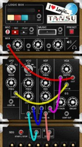
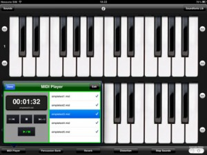
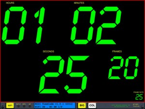
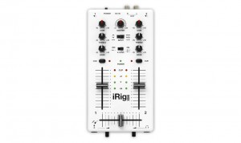

[appext 564763430]The iOS application – which is named “TANSU (dresser)”, is a miniature
version of a Modular Analog Synthesizer. This synthesizer is the same as the
one used and mastered by Hideki Matsutake of LOGIC SYSTEM.The sounds that were sampled and used for the VCO (Voltage Controlled
Oscillator) come directly from the actual “TANSU” owned by Hideki Matsutake
himself.
In addition, it also contains many original LOGIC SYSTEM recordings. The
application condenses the fun, experience and sound of an actual modular
synthesizer onto the small screen of an iPhone!!What will the sound be like when using the application? This application is
focused on providing the user with the feeling and excitement of using the
actual synthesizer for which it is based.Not only for a techno fan, but for any music lover!! Feel what it is like to
create your own music!!
Try this application to experience the “the birth of sound and music.”The main functions
■LOGIC BOX
Sound effects such as Shepard Tone and rhythms from music by LOGIC SYSTEM
have been made directly into the sound source.■MUSIC
You can use your iPhones own music library as a sound source. (However,
certain tracks which are covered under DRM may not be used).■Microphone function
You can use sounds which have been recorded with microphone.■Preset function
You can explore the potential of the TANSU Synth from various demo patterns.
Moreover, it can be utilized as a tutorial for beginners.■VCO (Voltage Controlled Oscillator), VCF (Voltage Controlled Filter), VCA
(Voltage Controlled Amplifier), LFO (Low Frequency Oscillator), EG (Envelope
Generator)Enhance the basic functionality of an analog synthesizer. (Various sound
processing is possible.)■It has an 2 channel 8 step analog sequencer!
(We are planning to add a function for converting to a 1 channel 16 step
sequencer)■You can enjoy connecting and reconnecting the patch cord to creat sounds
just as with a real synthesizer.■Three sound sources can be mixed by a three-channel mixer!
support：iPhone4S,iPhone5,iPad（Over iOS5.0）
Notes:
Commercial use of the works created by using this application is subject to the copyright clearance from right holders.(C)MUSIC AIRPORT,INC.
TANSU Synth
Peak Guitar
Guitar players scour the internet in search of information and practice tools that will help them improve their skills on the guitar. The internet is overloaded with a massive hodgepodge of information about scales, music theory, chords, and the modes. It is next to impossible to distill this avalanche of information down into something that is useful and practical for the everyday player.
Peak Guitar is a FREE iPad app that is designed to help the advancing guitarist achieve a big-picture understanding of the neck of the guitar and the scale patterns that cover it. It features easy-to-read scale diagrams that provide a simple system for mapping out the neck of the guitar in any key and any mode. Most importantly, Peak Guitar brings it all together by providing the guitarist with backing tracks, which are musical loops that were created by professional musicians that allow the guitarist to practice scales and modes in an authentic live musical context. This will help, so that the player can learn how these concepts actually sound in action.
Peak Guitar is designed for guitar players of all ability levels (except for absolute beginners) who want to improve their skills and reach the next level of performance. Any guitar player who is interested in learning about scales and improvisation will enjoy the app and reap huge benefits from it.
Presented by www.HighCountryGuitar.com, this free guitar app will unlock the secrets of improvisation for you and help you take your guitar playing to new heights.
Peak Guitar was created because there was a lot of information that exists about notes and scales, but no source that brings it all together in an easily manageable and understood way. Peak Guitar is designed to bring it all together and give guitarists the “big picture” understanding of the neck of the guitar.
With dozens of different tracks to choose from, Peak Guitar has something for everyone. So stop wishing; turn it up and jam it out, with Peak Guitar!!
Demo video explaining the features of Peak Guitar
[app 539480870]
midi Keyboard
“midi keyboard” is an application for professional musicians or students including:
– two independent GM/GS midi keyboards with 9 octaves (with independent octaves for each keyboard)
– MIDI Player for playing midi files ( .mid – with local archive of midi files )
– reverb and distortion sound effects (can be used together and with each generated sound)
– sustain pedal
– soundfonts archiveTo generate the sounds “midi Keyboard” uses the soundfonts GM/GS (files with extension .sf2 / .sf / .dls ).
The application is compatible with the existing soundfonts, you can:
– load and use the soundfonts files in real time
– store in the local “midi Keyboard” archive an infinite number of professional soundfonts, free downloadable from the web (the soundfonts can be also purchased from third parties)
Examples of free soundfonts that can be downloaded from the web are: FluidR3_GM.sf2 , PC51f.sf2 , Unison.SF2 , GeneralUser GS MuseScore v1.44.sf2 , TimGM6mb.sf2, etc…
“midi Keyboard” also gives you the ability to store, read and listen your midi files ( .mid ) using the integrated MIDI Player of “midi keyboard”.
During playback of midi files ( .mid ) you can play a melody using the two independent keyboards of “midi Keyboard” (keyboards sounds + MIDI Player sounds together).
You can also listen the midi files, stored in the “midi keyboard” archive, during a live performance with the ability to change the midi sounds in realtime.With “midi keyboard” you will have the sensation of using two professional midi keyboards.
Features:
– 2 independent midi keyboards with 9 octaves each (with independent octaves for each keyboard)
– multitouch
– archive of soundfonts GM/GS
– an infinite number of sounds (loadable from soundfonts)
– general midi sounds list
– archive of midi files
– MIDI player (can be used as background music for live performances)
– sustain pedal
– percussions
– reverb
– distortion
– 128 midi sounds + midi percussion included in the application
– soundfonts and midi file remote sharing (cloud)App type:
[appext 563264600]
– UNIVERSAL APP (you pay only once and runs on iPad, on iPhone classic and iPhone 5)
– iOS 6 tested
goodEar
Professional musicians know, that having a good trained ear is one of the most important skills, a musician should have. goodEar was made to increase those skills and bring you on a new musical level!
It is made for all musicians, whether you are beginner or professional.
Functions:
➤ Choose from four different modes: scales, chords, intervals, melodies
➤ Create your own exercises, depending on your personal approach. (No annoying wizards)!
➤ Play the exercises on piano or give the answer with multiple-choice
➤ Watch your progress in statistics
➤ Make highscores, and try to challenge yourself
goodEar was made with the knowledge of various professional musicians and teachers, for giving you high quality music education on the iPad.
[app 564470291]
MIDI TIMECODE
MIDI TimeCode realtime display shows the realtime running timecode code from any CoreMIDI compatible devices including:
– Digital Audio Workstations
– Sequencers
– External MIDI TimeCode sources
– SynchronisersShows TimeCode and Frames rate
Offers a realtime large display that can by used as a time referance
Useful for studio engineers and others
[app 561653048]
Mini Review – iRig Mix
For iOS beat mixers, the options for serious music mixing just keep getting better, and IK Multimedia, as usual, are ahead of the game. Following up the release of their iPhone DJ Rig app in March this year, comes the launch of a dedicated iPad version, plus the world’s first mobile mixer aimed at iOS users.
{kind=link}
Expanding it’s ever increasing line of music related hardware products for iOS, IK Multimedia’s latest gem is a versatile mobile mixer aimed at DJs, though it could be used for a range of other audio mixing situations, both iOS app related and just general audio mixing duties.
The iRig Mix is both light and portable, making it ideal for on the go mixing almost anywhere, as well as DJ set ups that are tight for space.
On the DJing side of things, the mobile mixer features a full-size standard cross-fader control which allows you to swap and blend the audio between the two main inputs.
There are also two full size volume faders for adjusting and balancing the two main audio input signals. Beside both faders are also a series of 4 LEDs per channel that indicate the amount of level coming from each input.
Also crucial to DJing, are the Cue (or pre-fader) buttons for each channel, which enables tracks to be auditioned through headphones without the audio going out the main output.
Then each channel has independent Bass and Treble controls, plus an input Gain control. There is also a master output volume control as well.
There are several unique switches on the top of the mixers, but I’ll come back to those shortly.
On the back, you’ll find a pair of 3.5mm inputs, and unbalanced RCA stereo outputs. The necessary cabling for connecting 2 stereo audio sources and hooking the mixer up to a sound system are conveniently included with the mixer, which is a nice touch.
As the mixer requires power, there is also an On/Off switch at the back, and rather than a proprietary type of connector, the included power supply utilises a standard Micro-USB plug, which means you could also use a stand alone battery powered product with a Micro-USB connector to juice up the mixer, so long as it can generate at least 2.0A to ensure smooth running of the iRig Mix.
At the front end of the mixer is an extra unbalanced mono audio input with its own volume control, designed for plugging in either a microphone or an instrument. There is also a headphone output, and this is independent to the master output.
 Now depending on your main use for the mixer, and the setup that suits you best, there is a great feature that has been included on the mixer that simply lets you select between one and two iOS devices for the audio source.
Now depending on your main use for the mixer, and the setup that suits you best, there is a great feature that has been included on the mixer that simply lets you select between one and two iOS devices for the audio source.
If you have two independent audio sources, such as two iOS devices, or even just one plus another MP3/CD player, laptop, turntable, or whatever, you plug them into the two individual stereo inputs at the back. If you only have one iOS device, however, there is a switch on the mixer that allows you to send two tracks from the one iOS device to the two channels on the mixer, albeit, in mono though. This is one of the unique features of the mixer, though it only works through IK Multimedia’s own DJ Rig apps as the software has a special setting within it that needs to be selected to enable this feature.
The other unique feature of the iRig Mix of note is the X-Sync option, which some seasoned DJs will no doubt scoff at, but it will be a lifesaver for budding bedroom beat mixers.
When enabled on the mixer, this works in conjunction with the DJ Rig app, and helps to automatically sync the BPM of tracks from different audio sources to the tracks playing from within the app. Naturally it can’t adjust the tempo of an external audio source, but it does change the speed of the tracks being played from within the DJ Rig app. You can easily disable it, but good on IK Multimedia for including it for the rest of us who could some help getting the beats in time.
 As for the general build of the iRig Mix, it feels nice and sturdy though I don’t know how well it would hold up week after week in a professional night club environment. It’s clearly not designed for professional set ups, but that doesn’t mean you can’t get professional sounding results from using it. And with the proper care and sensible use, I can’t see why it would cause any problems well beyond the warranty period.
As for the general build of the iRig Mix, it feels nice and sturdy though I don’t know how well it would hold up week after week in a professional night club environment. It’s clearly not designed for professional set ups, but that doesn’t mean you can’t get professional sounding results from using it. And with the proper care and sensible use, I can’t see why it would cause any problems well beyond the warranty period.
For a full rundown on the specs, check the official site – httpwww.ikmultimedia.com/products/irigmix/
IK Multimedia Introduces DJ Rig for iPad
[appext 556542378] [app 556541429]IK Multimedia, the world leader in mobile music-creation apps and accessories, announced today that DJ Rig for iPad® is now available on the App Store. DJ Rig for iPad takes mobile DJ mixing to a completely new level, providing a comprehensive suite of professional DJ mixing tools, all in one convenient iPad app. DJ Rig for iPad greatly expands the feature set from DJ Rig for iPhone, offering numerous new capabilities that previously have only been available on professional DJ software for the Mac and PC.
With DJ Rig for iPad, mobile DJs will possess the virtual equivalent of a full professional DJ setup – two turntables or CD players, a DJ mixer, a DJ multi-effects unit, a phrase sampler and more, all in an portable package to take their spin to the next level, anytime and anywhere.
DJ Rig for iPad is a fully self-contained DJ environment that can be directly connected to a sound system, but even more functionality is available when it’s used in tandem with IK’s new iRig MIX ultra-compact mobile DJ mixer. iRig Mix offers complete physical track control, thanks to its full-length channel faders and crossfaders, additional EQs, and direct connections for headphones, microphones, loudspeakers or a PA system. When used together, DJ Rig and iRig MIX provide a comprehensive DJ setup that packs all the features the most demanding DJs need – all in an ultra-light combo rig that can be up and running in seconds.
Professional DJing for the first time on iPad
- Familiar double Deck configuration with a triple twist – When first launched, DJ Rig for iPad looks and feels very familiar – its interface accurately replicates a full dual-deck hardware rig with each deck routed through the audio output jack on the iPad (split stereo). What’s different is that each deck has three visual modes: “Vinyl” for traditional creative scratch effects, “Digital” jog for a more traditional CD manipulation and the new “Waveform” view for accurate cue placement, synchronization and visualization of beats.
- Sync, mix & scratch – DJ Rig for iPad with CloneDeck™ technology allows DJs to mix and scratch on their iPads, just like they would with hardware counterparts. The built-in dual-deck system with a crossfader allows them to mix with ultra-accurate precision, and the Tempo Sync, X-Sync and Beat Match functions automatically align the beats from any two sources for flawless transitions. The new AutoMix feature will automatically crossfade and mix music to keep the beat going even when the DJ steps away.
- New creative DJ effects provide unlimited sonic possibilities – DJ Rig for iPad features 18 available BPM-synced DJ effects for customizing mixes and build-ups, always at the perfect tempo. Effects include Delay, Flanger, Crush, HP filter, LP filter, BP filter, Compressor, Wah, Phaser, Fuzz, Reverb, and Stutter, plus 6 completely new effects: Noise, Tail, Brake, Spin, Twist UP and Twist DOWN. The X/Y effects interface provides full creative control and real-time manipulation that will inspire DJs to be their creative best.
- On-board sampler with expandable sound banks – DJ Rig for iPad features an “on-the-fly” sampler with 9 accessible and assignable pads for adding sound bites and samples to mixes. For even more creative flexibility, DJ Rig for iPad provides “live sampling” and “looping” functions for completely customizing and personalizing the mix.
DJ Rig for iPad features:
- Customizable deck display with Vinyl, Waveform or Digital Deck interface with accurate scratching engine with CloneDeck™ technology
- Waveform display mode for ultra-precise visual cueing
- Fast BPM detection and beat map analysis with Tempo Sync and Beat Match
- X-Sync mode detects the BPM from external audio sources and automatically syncs the audio/tempo of internal decks to external devices (when used with iRig MIX)
- Advanced looping section with continuous loop surface; create loops with tempo divisions always to the beat; manual and slip mode available
- 18 effects: Delay, Flanger, Crush, HP filter, LP filter, BP filter, Compressor, Wah, Phaser, Fuzz, Reverb, Stutter and more, with X/Y touch interface control
- 6 new creative effects: Noise, Tail, Brake, Spin, Twist UP and Twist DOWN
- On-the-fly expandable sampler machine with 9 pads and 4 banks slot
- Live sampling functionality with volume and pitch control
- 5 visual cue points per song and Auto Cue for automatic first beat positioning
- 3 crossfader curves for customizing fades and crossfade filter
- Direct access to iPod Music library and playlists
- AutoMix Feature for automatic mixing of playlists or entire library
- Live recorder allows recording of full mixing gigs
- Supports/plays all major digital audio formats including MP3, AAC, WAV, AIFF
- Multiple output configurations for virtually any audio setup